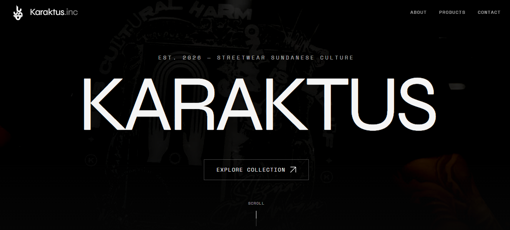
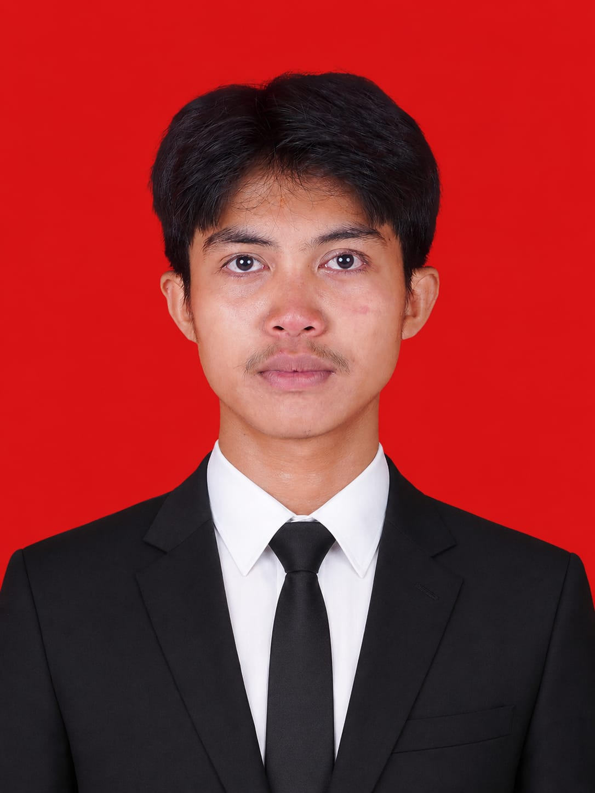
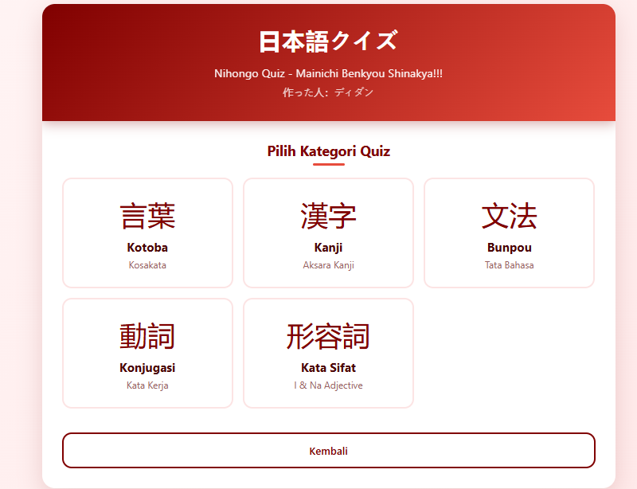
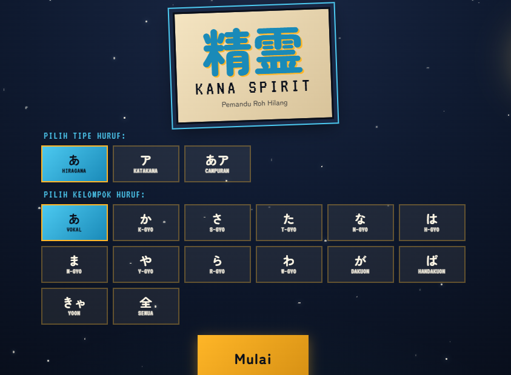
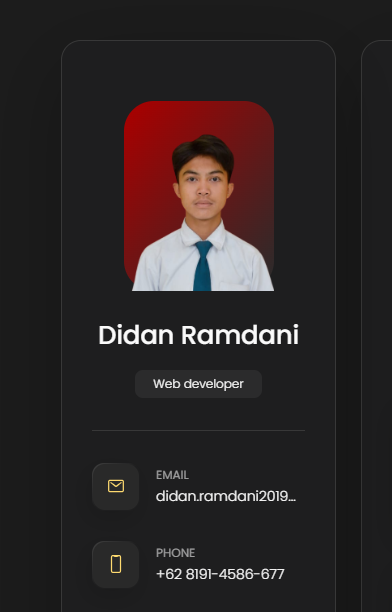

Karaktus.inc
Karaktus.Inc Semi E-Commerce Landing Page. Selling T-shirts with the best quality.

I used to think software engineering was just about writing code that runs. But in RPL at SMKN 1 Banjar, I learned that good code is code that can still be read two years from now — by yourself, or by someone who has never met you.
Now at UTB, my focus slowly shifts from "it works" to "it feels right" — interfaces that aren't flashy, performance that isn't dramatic, and structures that can be inherited without surprises.
Three years in high school understanding the foundation, at university starting to question the foundation itself.
Three years focused on building foundations: basic programming, databases, web programming, and a full cycle of internship projects. Here I learned that "finished" is a harder word than "running".
Continuing to a Bachelor's in Informatics Engineering. Focus broadens — from just writing apps to understanding why a system is designed that way, and when to reject convention.
Not specializations — more like three directions I intentionally keep lit simultaneously. All three feed each other.
Lightweight, semantic interfaces that don't waste user time. I cut more often than I add.
Consistent APIs, clear database relations, and endpoints that don't need deciphering. Documentation is part of the code.
Not design that looks pretty on Dribbble — design that still makes sense after three months of use. Microcopy, rhythm, and hierarchy.
A collection of personal and academic projects — sorted from newest. Swipe horizontally, or scroll vertically as usual.

Karaktus.Inc Semi E-Commerce Landing Page. Selling T-shirts with the best quality.

A camera recording app that triggers photo capture automatically when it detects the sound of a clap. Built with Web Audio API.

Web App to learn Japanese according to what is in Minna no Nihongo. Includes Flashcard kotoba, kanji, bunpou, etc.

Kana Spirit: Lost Soul Guide is an educational game with a mystical Japanese night theme. The player acts as a spirit guide tasked with freeing lost souls. To free them, the player must type the romaji reading of the hiragana or katakana characters on the soul's face.

My first personal portfolio web when I was still in school.
I don't write code to impress anyone. I write so that two years from now, I can still read it without cursing myself.
Overview text...
Process text...
Solution text...